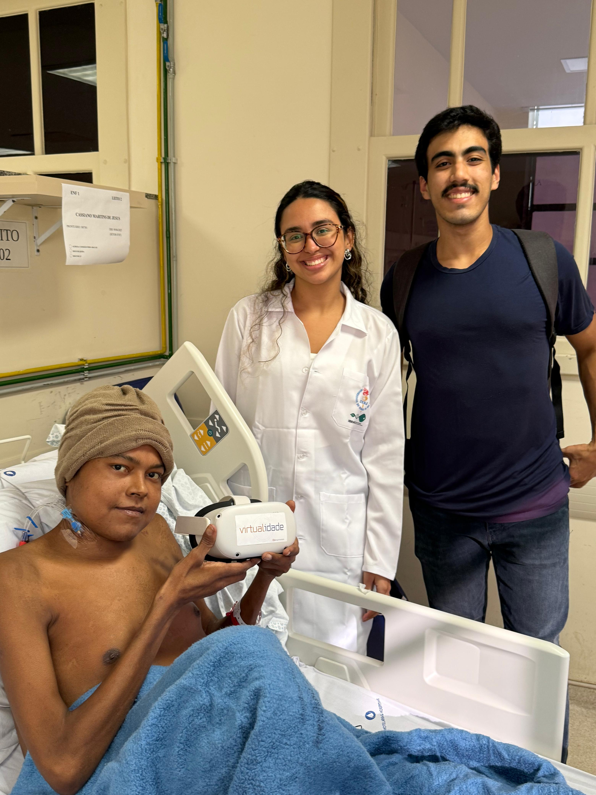
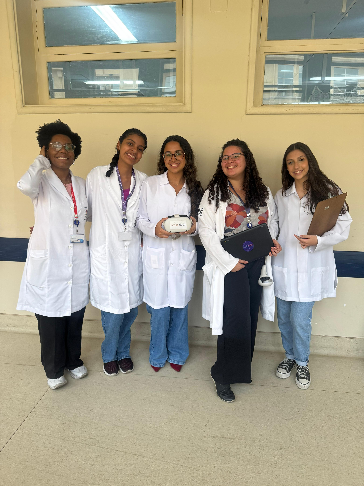

Projeto de Extensão: Realidade Virtual Terapêutica
Este projeto utiliza a realidade virtual como recurso terapêutico para promover acolhimento e redução do estresse em pacientes, especialmente idosos, em contexto hospitalar e ambulatorial. As ações envolvem interação, exibição de vídeos em 360° e aplicação de questionários. A pesquisa associada investiga os efeitos da RV na diminuição da ansiedade pré-operatória.
Ver no Instagram: @ongvirtualidade